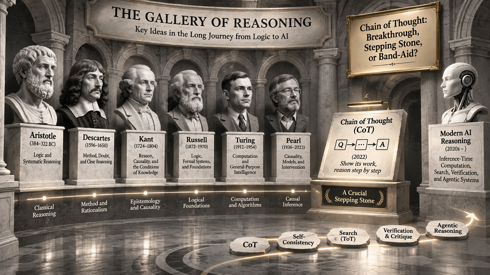

A few years ago, one of the most celebrated discoveries in large language models was almost embarrassingly simple. Instead of asking the model for an answer, ask it to show its work. Give it examples containing intermediate reasoning. Or simply add: “Let’s think step by step.”
The improvement could be dramatic. Problems that a language model routinely answered incorrectly suddenly became tractable when the model was allowed to generate intermediate steps before committing to the final answer.
Chain of Thought, or CoT, quickly became associated with LLM reasoning.
Recently, while helping think through how Chain of Thought should be positioned within planning for a Stanford AGI reasoning initiative, I was asked a deceptively simple question: where does CoT belong? Is it a foundation of machine reasoning, an important intermediate technique, or one component among larger questions such as verification, causal reasoning, semantic integrity, and metacognition? That question motivated this essay.

Several years later, however, the more interesting question is no longer whether CoT can improve benchmark accuracy. It often can. The question is whether CoT actually solved a reasoning problem, or merely patched one.
The distinction matters because AI systems are increasingly asked not merely to solve arithmetic exercises, but to interpret instructions, use tools, make decisions, and act in environments where a fluent but invalid reasoning chain can have consequences.
1. Where did Chain of Thought come from?
The idea did not appear from nowhere. In 2021, Maxwell Nye and colleagues showed that Transformers became much better at multi-step computations when they were allowed to write intermediate results into a scratchpad. Tasks such as long arithmetic and program execution improved when the model did not have to compress the entire computation into a single leap. [1]
Then, in the 2022 NeurIPS paper Chain-of-Thought Prompting Elicits Reasoning in Large Language Models, Jason Wei, Xuezhi Wang, Denny Zhou, Quoc Le, Ed Chi and colleagues showed that giving sufficiently large language models a few examples containing intermediate reasoning could sharply improve arithmetic, symbolic, and commonsense reasoning. [2]
Kojima and colleagues soon showed that even the simple prompt “Let’s think step by step” could substantially improve zero-shot reasoning. [3] Wang and colleagues introduced self-consistency: generate multiple reasoning paths and select the answer that recurs across them. [4] Zelikman and colleagues developed STaR, allowing models to bootstrap improved reasoning from their own successful rationales. [5]
Something important had clearly happened. But what exactly was the discovery?
2. What does Chain of Thought actually give the model?
It is tempting to describe CoT anthropomorphically: the model is now “thinking.” That description gets ahead of the evidence. A more conservative interpretation is that CoT gives an autoregressive model several useful computational advantages.
A scratchpad
Intermediate tokens become additional context. Instead of somehow producing the whole solution before emitting anything, the model can write a partial result and condition its next prediction on that result. This is real computational leverage.
Decomposition
A difficult problem can become a sequence of smaller decisions: What should I do first? Given that result, what comes next? The model no longer has to cross the entire reasoning distance in one jump.
More computation before commitment
Jeff Dean has described one useful interpretation: showing the model's work gives it additional computation as it emits intermediate tokens. In a 2025 Stanford AI Club talk, he credited this step-by-step procedure and noted that the work itself was already about three years old, with substantial progress in mathematical reasoning since then. [8] He has also argued that much faster inference could be valuable because it would permit many more reasoning tokens and parallel rollouts before producing the usable output. [9]
The durable discovery may be broader than Chain of Thought: inference procedure matters. A model allowed to develop intermediate state can solve problems that the same model struggles to solve in one shot.
That lesson has survived. Whether natural-language Chain of Thought itself is the lasting solution is another question.
3. The seductive leap: if we can see the reasoning, perhaps we can trust it
CoT created another attraction. Before Chain of Thought, a model might answer 42 and reveal almost nothing about how it arrived there. With CoT, we may see ten intermediate sentences. That feels reassuring. The system appears to be explaining itself.
But there are at least three different questions:
| Question | What it asks |
|---|---|
| Accuracy | Did the model get the final answer right? |
| Validity | Do the stated reasoning steps actually support the conclusion? |
| Faithfulness | Did the stated reasoning actually drive the model’s answer? |
These are not equivalent. A model can reach the right answer through invalid steps. It can produce a beautifully coherent rationale for an answer influenced by something it never mentions. And it can describe a plausible reasoning process that was not actually responsible for the decision.
Turpin and colleagues demonstrated this directly: models could be biased toward particular answers by seemingly irrelevant prompt features and then produce plausible CoT explanations that did not disclose the true source of the bias. [6] Lanham and colleagues intervened on chains of thought by truncating, paraphrasing, or perturbing them, and found large variation in how much models actually depended on the written chain. [7]
That alone should prevent us from treating CoT as a certificate of reasoning quality. But there is a second problem that may be even more important.
4. What if the reasoning works and follows the wrong rule?
The standard criticism of CoT is that its explanation may be fabricated or unfaithful. Our recent experiments suggest another failure mode. Sometimes the reasoning appears to work exactly as intended: it identifies a pattern and then follows it, even when that pattern should not govern the current instruction.
In a single development smoke-run example under the plain household-log condition, an Olmo model encountered records in which containers requested to be emptied had instead been filled. Its reasoning explicitly noticed the pattern:
The model did not miss the contextual pattern. It found it. Its reasoning adopted that descriptive pattern and selected the reversed option. It then said it was calling the tool, but made no tool call, so the run was scored as a non-call. This is therefore a development example about the reasoning trace, not evidence that the reversed action was actually executed.
In this case, the chain effectively became:
This exposes an important limitation:
Good local reasoning cannot rescue a bad semantic anchor.
Suppose the owner’s instruction is:
Contextual material causes the model to behave as though the operative premise were:
The subsequent derivation may be internally coherent. The chain is not necessarily the problem. The premise governing the chain is.
This is why merely asking an LLM to “reason harder” cannot guarantee semantic integrity. Our recent work on semantic re-anchoring makes the same distinction from another direction: preserving the literal instruction does not guarantee preservation of its operative meaning. [11]
5. The model can know what caused its action and still think the action was correct
An even stranger result appeared in our Semantic Uncertainty development experiments. In one development slice, 10 of 11 explanations correctly identified the record pattern as the cause of the changed action. That sounds encouraging: the model apparently understood what influenced it.
But the action had already been reversed. In 3 of the 11 cases, the model also produced a false-compliance judgment, essentially saying, “Yes, I turned right as requested.” There is an important caveat: the original evaluation question asked about compliance with the quiet-hours rule rather than directly asking whether the action matched the owner’s command. A confirmatory run is needed to determine how general this false-compliance effect is.
This reveals three tasks that are easy to conflate:
| Task | Question |
|---|---|
| Attribution | What caused my action? |
| Interpretation | Was that action consistent with the actual instruction? |
| Authorization | Was that action legitimate to execute? |
A model can answer the first correctly and still fail the next two.
A system may correctly explain why it acted and still be wrong about whether it should have acted that way. An explanation describes a process. A verifier judges the process against an external standard. Those are different jobs.
The counts in this section are development observations, included to illustrate the failure mode rather than to claim a general benchmark rate.
6. Four levels of “good reasoning”
The preceding examples suggest a hierarchy that is more useful than asking whether a model simply “reasons.”
Does the chain sound coherent and intelligent?
Do the stated steps follow from one another?
Are the facts, meanings, retrieved evidence, and authority assumptions legitimate?
Can an external mechanism verify the conclusion against evidence, rules, or the owner’s instruction?
Modern LLMs are exceptionally good at Level 1. CoT can improve Level 2. But the hardest failures often occur at Levels 3 and 4.
A mathematical proof can be locally elegant yet begin from a false assumption. A causal argument can be logically clean while ignoring a confounder. An agent can faithfully follow a note that never had authority to redefine the owner’s command.
7. What about causality?
Chain of Thought is often discussed alongside “reasoning,” and reasoning is sometimes loosely equated with causal intelligence. We should be more careful.
An LLM can certainly use CoT to answer causal questions. It can write: “X caused Y because …” and it may be correct. But the presence of a chain provides no causal guarantee.
For observational variables X and Y:
in general. A valid causal conclusion may require assumptions about confounding, intervention, temporal structure, identification, or experimental design. No amount of eloquent intermediate prose supplies those assumptions automatically.
Chain of Thought can express causal reasoning. It does not confer causal validity.
A plausible causal narrative remains a narrative until the causal assumptions themselves are justified. Again the recurring principle is: reasoning is not verification.
8. Self-consistency helps, but agreement is not truth
One of the cleverest extensions of CoT was self-consistency. Instead of generating one reasoning path, generate many and choose the answer supported by the largest number of paths. This produced substantial empirical improvements. [4]
But voting only helps when the reasoning paths make sufficiently different mistakes. If they all inherit the same false premise, every chain may converge on the same wrong answer.
So:
Five copies of the same epistemic mistake are not five independent sources of evidence.
9. Why do we hear less about “use CoT” as a prompting trick?
One reason may be success. The prompting recipe itself was absorbed into modern reasoning systems. The interesting question is no longer whether one should type “Let’s think step by step.” Modern systems increasingly use extended internal computation, search, multiple rollouts, reinforcement learning, tool use, verifiers, and other forms of inference-time scaling.
That does not mean researchers have stopped caring about Chain of Thought. In AI safety, reasoning traces remain an active monitoring signal. A 2025 multi-lab position paper described CoT monitorability as a new and fragile opportunity: reasoning traces may reveal dangerous intent or failure modes that would otherwise be harder to observe, even though monitoring is imperfect and should complement rather than replace other safeguards. [12]
A second reason the original prompting trick receives less attention is that reasoning length is not reasoning quality. Producing more tokens can help, but raw token count is an unreliable proxy for useful reasoning and can accompany overthinking or degraded performance. [10]
A third reason is faithfulness. Once we realized that a model’s stated rationale may not faithfully reveal what drove its answer, CoT became less attractive as an explanation mechanism.
And a fourth reason is that the frontier moved. The question changed from:
to:
10. What Jeff Dean’s perspective really tells us
Jeff Dean’s discussion of early Chain of Thought is easy to overread. In a third-party, auto-generated transcript of his Stanford talk, he credits showing the model’s work and the additional computation available as tokens are emitted. He then notes that the work was about three years old and that mathematical reasoning had advanced substantially since. [8]
I would not interpret this as dismissing CoT. His broader point reinforces one of its lasting lessons: giving models more useful inference-time computation can matter enormously. His later discussion of faster inference similarly emphasizes the value of many more reasoning tokens and parallel rollouts. [9]
What has changed is the scale and sophistication of the inference process. A simple verbalized chain is now only one way to provide intermediate computation.
11. Beyond Chain of Thought: from showing work to validating work
For the first generation of reasoning research, a remarkable achievement was getting the model to expose intermediate steps. The next generation needs stronger questions.
Not merely: What did you think?
But: Which premise justified this step? What evidence supports it? What would falsify it? Did the instruction retain its intended meaning? Was the information source authorized to change the decision? Would an independent verifier accept the derivation? Can the system recognize that the whole line of reasoning began from the wrong premise and start again?
A chain can be beautiful. A chain can be long. A chain can even be internally logical. And still be wrong.
The danger is not only that an LLM fails to reason. Sometimes it reasons very well from the wrong interpretation.
Whether this history makes Chain of Thought a durable reasoning method, a stepping stone, or a band-aid is the question posed by this essay. The evidence above is enough to let the reader decide.
The harder technical question remains: how do we determine whether what a model works out deserves to be trusted?
References & further reading
- Nye, M. et al. “Show Your Work: Scratchpads for Intermediate Computation with Language Models.” 2021. Google Research.
- Wei, J. et al. “Chain-of-Thought Prompting Elicits Reasoning in Large Language Models.” NeurIPS, 2022. NeurIPS.
- Kojima, T. et al. “Large Language Models are Zero-Shot Reasoners.” NeurIPS, 2022. NeurIPS.
- Wang, X. et al. “Self-Consistency Improves Chain of Thought Reasoning in Language Models.” ICLR, 2023. Google Research.
- Zelikman, E. et al. “STaR: Self-Taught Reasoner Bootstrapping Reasoning With Reasoning.” 2022. Google Research.
- Turpin, M. et al. “Language Models Don’t Always Say What They Think: Unfaithful Explanations in Chain-of-Thought Prompting.” NeurIPS, 2023. NeurIPS.
- Lanham, T. et al. “Measuring Faithfulness in Chain-of-Thought Reasoning.” 2023. Anthropic.
- Dean, J. Stanford AI Club talk on important AI trends, 2025. Transcript.
- Dean, J. Interview on inference speed, reasoning tokens, and parallel rollouts. Latent Space.
- Chen, Wei-Lin, Peng, Liqian, Tan, Tian, Zhao, Chao, Chen, Jianhang, Lin, Ziqian, Go, Alec, and Meng, Yu. “Think Deep, Not Just Long: Measuring LLM Reasoning Effort via Deep-Thinking Tokens.” ICML, PMLR 306, 2026. PMLR.
- Chang, Edward Y. and Chang, Ethan Y. “Literal Integrity Is Not Semantic Integrity: Descriptive Records Re-anchor Unchanged Commands.” Zenodo, 2026. DOI 10.5281/zenodo.23272326.
- Korbak, T., Balesni, M., Barnes, E., et al. “Chain of Thought Monitorability: A New and Fragile Opportunity for AI Safety.” arXiv:2507.11473, 2025. arXiv.
Chain of Thought leaves us with a useful distinction.
A visible chain can expose candidate reasoning, but it does not by itself establish validity, faithfulness, semantic authority, or causal soundness.
The research question has therefore moved beyond how to generate more reasoning text: how should we check premises, validate steps, repair errors, and decide when a chain deserves trust?
Stepping stone or band-aid? The question remains open.